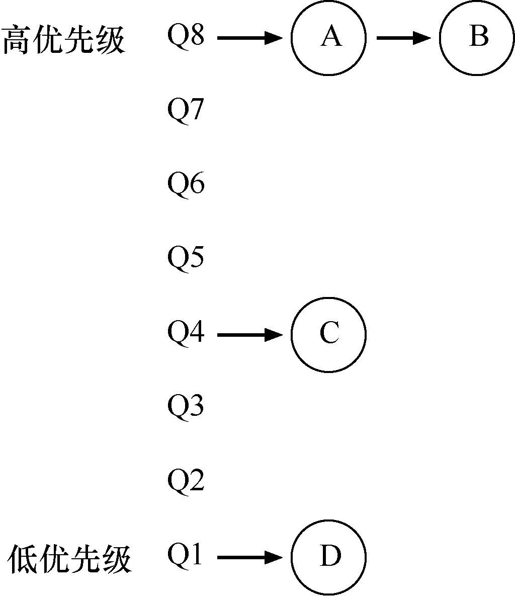
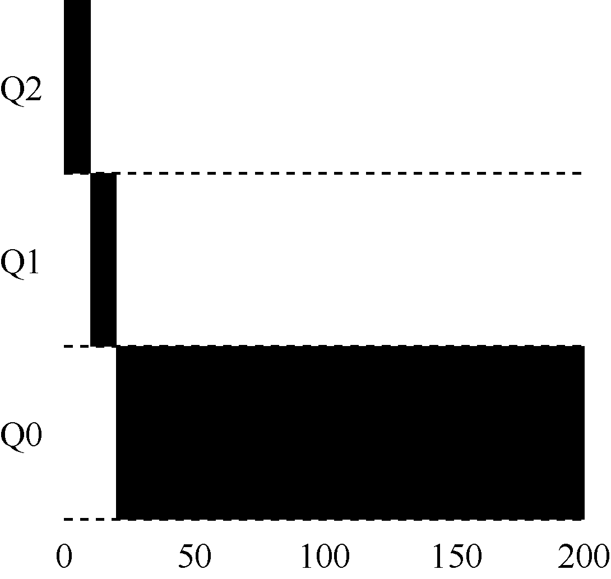
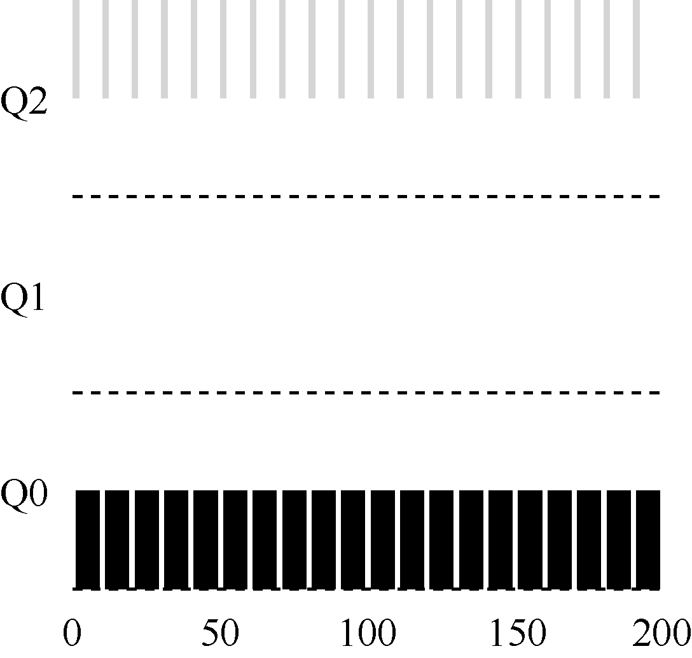
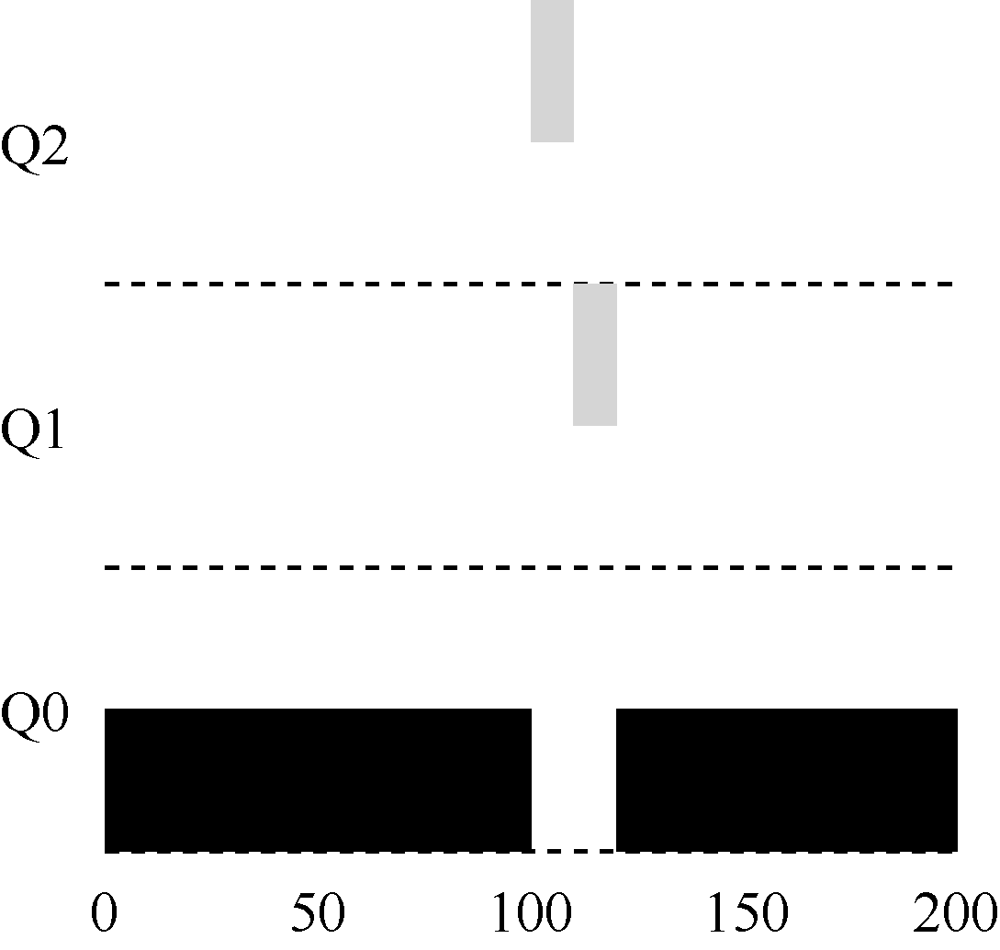
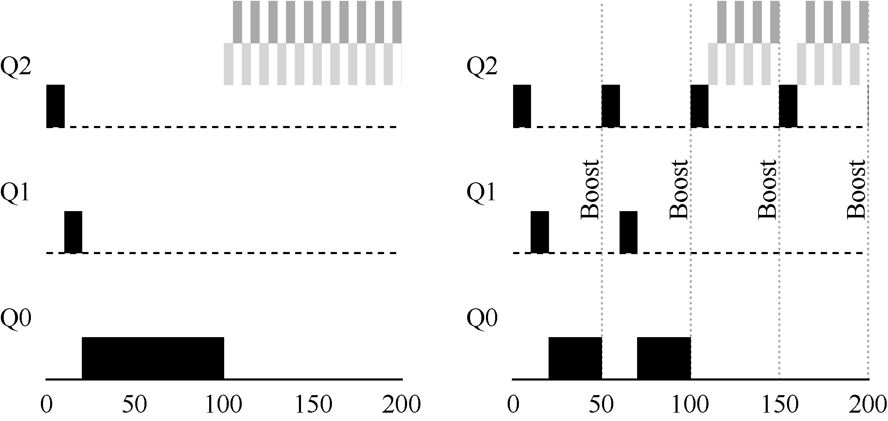
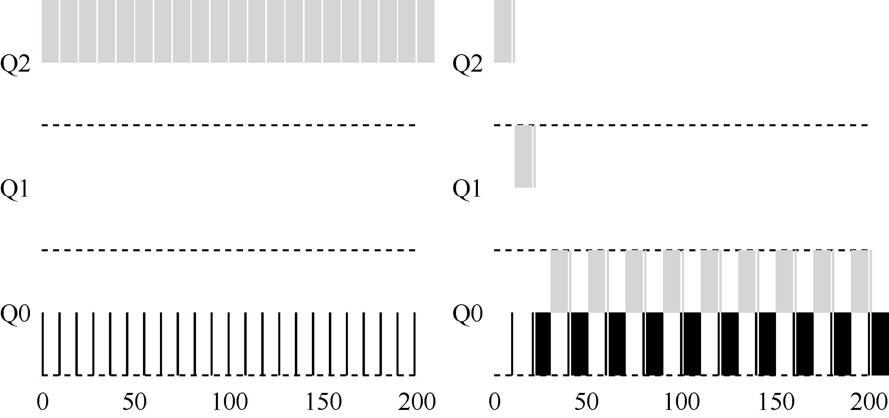
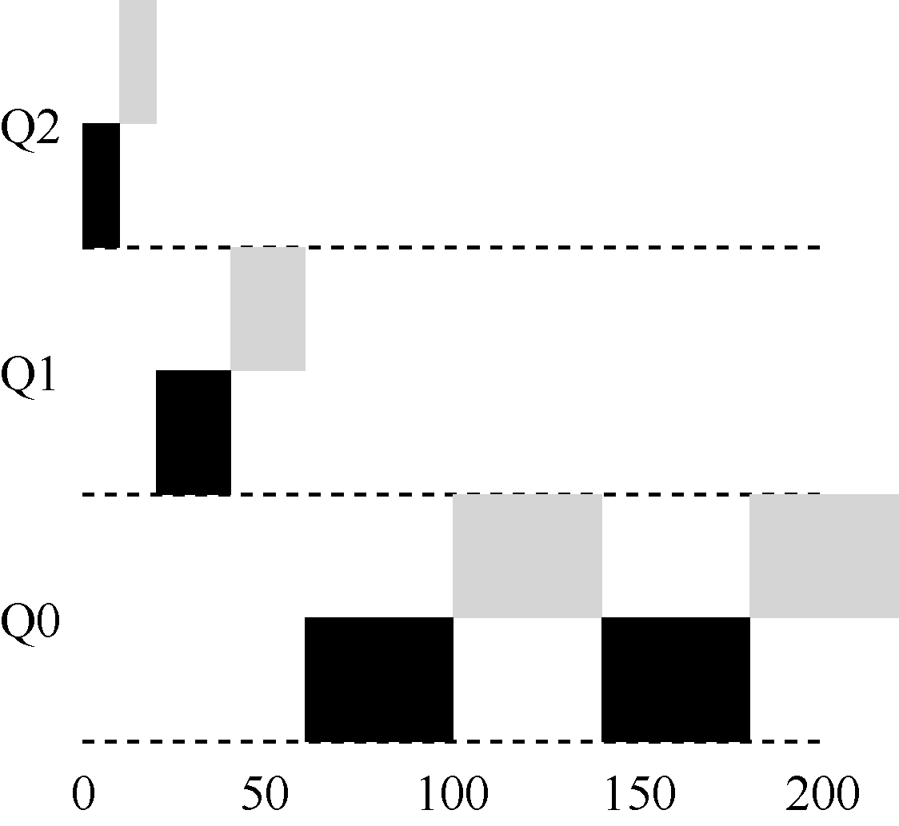

本章将介绍一种著名的调度方法——多级反馈队列（Multi-level Feedback Queue，MLFQ）。1962 年，Corbato 首次提出多级反馈队列[C+62]，应用于兼容时分共享系统（CTSS）。Corbato 因在CTSS 中的贡献和后来在Multics 中的贡献，获得了ACM 颁发的图灵奖（Turing Award）。该调度程序经过多年的一系列优化，出现在许多现代操作系统中。
多级反馈队列需要解决两方面的问题。首先，它要优化周转时间。在第7 章中我们看到，这通过先执行短工作来实现。然而，操作系统通常不知道工作要运行多久，而这又是SJF（或STCF）等算法所必需的。其次，MLFQ 希望给交互用户（如用户坐在屏幕前，等着进程结束）很好的交互体验，因此需要降低响应时间。然而，像轮转这样的算法虽然降低了响应时间，周转时间却很差。所以这里的问题是：通常我们对进程一无所知，应该如何构建调度程序来实现这些目标？调度程序如何在运行过程中学习进程的特征，从而做出更好的调度决策？
关键问题：没有完备的知识如何调度？
没有工作长度的先验（priori）知识，如何设计一个能同时减少响应时间和周转时间的调度程序？
提示：从历史中学习
多级反馈队列是用历史经验预测未来的一个典型的例子，操作系统中有很多地方采用了这种技术（同样存在于计算机科学领域的很多其他地方，比如硬件的分支预测及缓存算法）。如果工作有明显的阶段性行为，因此可以预测，那么这种方式会很有效。当然，必须十分小心地使用这种技术，因为它可能出错，让系统做出比一无所知的时候更糟的决定。
8.1 MLFQ：基本规则¶
为了构建这样的调度程序，本章将介绍多级消息队列背后的基本算法。虽然它有许多不同的实现[E95]，但大多数方法是类似的。
MLFQ 中有许多独立的队列（queue），每个队列有不同的优先级（priority level）。任何时刻，一个工作只能存在于一个队列中。MLFQ 总是优先执行较高优先级的工作（即在较高级队列中的工作）。
当然，每个队列中可能会有多个工作，因此具有同样的优先级。在这种情况下，我们就对这些工作采用轮转调度。
因此，MLFQ 调度策略的关键在于如何设置优先级。MLFQ 没有为每个工作指定不变的优先情绪而已，而是根据观察到的行为调整它的优先级。例如，如果一个工作不断放弃CPU 去等待键盘输入，这是交互型进程的可能行为，MLFQ 因此会让它保持高优先级。相反，如果一个工作长时间地占用CPU，MLFQ 会降低其优先级。通过这种方式，MLFQ 在进程运行过程中学习其行为，从而利用工作的历史来预测它未来的行为。
至此，我们得到了MLFQ 的两条基本规则。
规则1：如果A 的优先级 > B 的优先级，运行A（不运行B）。
规则2：如果A 的优先级 = B 的优先级，轮转运行

图8.1 MLFQ 的例子
A 和B。
如果要在某个特定时刻展示队列，可能会看到如下内容（见图8.1）。图8.1 中，最高优先级有两个工作（A 和B），工作C 位于中等优先级，而D 的优先级最低。按刚才介绍的基本规则，由于A 和B 有最高优先级，调度程序将交替的调度他们，可怜的C 和D 永远都没有机会运行，太气人了！
当然，这只是展示了一些队列的静态快照，并不能让你真正明白MLFQ 的工作原理。我们需要理解工作的优先级如何随时间变化。初次拿起本书阅读一章的人可能会吃惊，这正是我们接下来要做的事。
8.2 尝试1：如何改变优先级¶
我们必须决定，在一个工作的生命周期中，MLFQ 如何改变其优先级（在哪个队列中）。要做到这一点，我们必须记得工作负载：既有运行时间很短、频繁放弃CPU 的交互型工作，也有需要很多CPU 时间、响应时间却不重要的长时间计算密集型工作。下面是我们第一次尝试优先级调整算法。
规则3：工作进入系统时，放在最高优先级（最上层队列）。
规则4a：工作用完整个时间片后，降低其优先级（移入下一个队列）。
规则4b：如果工作在其时间片以内主动释放CPU，

图8.2 长时间工作随时间的变化
则优先级不变。
实例1：单个长工作¶
我们来看一些例子。首先，如果系统中有一个需要长时间运行的工作，看看会发生什么。图8.2 展示了在一个有3 个队列的调度程序中，随着时间的推移，这个工作的运行情况。
从这个例子可以看出，该工作首先进入最高优先级（Q2）。执行一个10ms 的时间片后，调度程序将工作的优先级减1，因此进入Q1。在Q1 执行一个时间片后，最终降低优先级进入系统的最低优先级（Q0），一直留在那里。相当简单，不是吗？
实例2：来了一个短工作¶
再看一个较复杂的例子，看看MLFQ 如何近似SJF。在这个例子中，有两个工作：A是一个长时间运行的CPU 密集型工作，B 是一个运行时间很短的交互型工作。假设A 执行一段时间后B 到达。会发生什么呢？对B 来说，MLFQ 会近似于SJF 吗？
图8.3 展示了这种场景的结果。A（用黑色表示）在最低优先级队列执行（长时间运行的CPU 密集型工作都这样）。B（用灰色表示）在时间T=100 时到达，并被加入最高优先级队列。由于它的运行时间很短（只有20ms），经过两个时间片，在被移入最低优先级队列之前，B 执行完毕。然后A 继续运行（在低优先级）。
通过这个例子，你大概可以体会到这个算法的一个主要目标：如果不知道工作是短工作还是长工作，那么就在开始的时候假设其是短工作，并赋予最高优先级。如果确实是短工作，则很快会执行完毕，否则将被慢慢移入低优先级队列，而这时该工作也被认为是长工作了。通过这种方式，MLFQ 近似于SJF。
实例3：如果有I/O 呢¶
看一个有I/O 的例子。根据上述规则4b，如果进程在时间片用完之前主动放弃CPU，则保持它的优先级不变。这条规则的意图很简单：假设交互型工作中有大量的I/O 操作（比如等待用户的键盘或鼠标输入），它会在时间片用完之前放弃CPU。在这种情况下，我们不想处罚它，只是保持它的优先级不变。
图8.4 展示了这个运行过程，交互型工作B（用灰色表示）每执行1ms 便需要进行I/O操作，它与长时间运行的工作A（用黑色表示）竞争CPU。MLFQ 算法保持B 在最高优先级，因为B 总是让出CPU。如果B 是交互型工作，MLFQ 就进一步实现了它的目标，让交互型工作快速运行。

原书第 59 页图示 2

图8.3 一个交互型工作图8.4 混合I/O 密集型和CPU 密集型工作负载
当前MLFQ 的一些问题¶
至此，我们有了基本的MLFQ。它看起来似乎相当不错，长工作之间可以公平地分享CPU，又能给短工作或交互型工作很好的响应时间。然而，这种算法有一些非常严重的缺点。你能想到吗？（暂停一下，尽量让脑筋转转弯）
首先，会有饥饿（starvation）问题。如果系统有“太多”交互型工作，就会不断占用CPU，导致长工作永远无法得到CPU（它们饿死了）。即使在这种情况下，我们希望这些长工作也能有所进展。
其次，聪明的用户会重写程序，愚弄调度程序（game the scheduler）。愚弄调度程序指的是用一些卑鄙的手段欺骗调度程序，让它给你远超公平的资源。上述算法对如下的攻击束手无策：进程在时间片用完之前，调用一个I/O 操作（比如访问一个无关的文件），从而主动释放CPU。如此便可以保持在高优先级，占用更多的CPU 时间。做得好时（比如，每运行99%的时间片时间就主动放弃一次CPU），工作可以几乎独占CPU。
最后，一个程序可能在不同时间表现不同。一个计算密集的进程可能在某段时间表现为一个交互型的进程。用我们目前的方法，它不会享受系统中其他交互型工作的待遇。
8.3 尝试2：提升优先级¶
让我们试着改变之前的规则，看能否避免饥饿问题。要让CPU 密集型工作也能取得一些进展（即使不多），我们能做些什么？
一个简单的思路是周期性地提升（boost）所有工作的优先级。可以有很多方法做到，但我们就用最简单的：将所有工作扔到最高优先级队列。于是有了如下的新规则。
规则5：经过一段时间S，就将系统中所有工作重新加入最高优先级队列。
新规则一下解决了两个问题。首先，进程不会饿死——在最高优先级队列中，它会以轮转的方式，与其他高优先级工作分享CPU，从而最终获得执行。其次，如果一个CPU 密集型工作变成了交互型，当它优先级提升时，调度程序会正确对待它。
我们来看一个例子。在这种场景下，我们展示长工作与两个交互型短工作竞争CPU 时的行为。图8.5 包含两张图。左边没有优先级提升，长工作在两个短工作到达后被饿死。右边每50ms 就有一次优先级提升（这里只是举例，这个值可能过小），因此至少保证长工作会有一些进展，每过50ms 就被提升到最高优先级，从而定期获得执行。

图8.5 不采用优先级提升（左）和采用（右）
当然，添加时间段S 导致了明显的问题：S 的值应该如何设置？德高望重的系统研究员John Ousterhout[O11]曾将这种值称为“巫毒常量（voo-doo constant）”，因为似乎需要一些黑魔法才能正确设置。如果S 设置得太高，长工作会饥饿；如果设置得太低，交互型工作又得不到合适的CPU 时间比例。
8.4 尝试3：更好的计时方式¶
现在还有一个问题要解决：如何阻止调度程序被愚弄？可以看出，这里的元凶是规则4a 和4b，导致工作在时间片以内释放CPU，就保留它的优先级。那么应该怎么做？
这里的解决方案，是为MLFQ 的每层队列提供更完善的CPU 计时方式（accounting）。调度程序应该记录一个进程在某一层中消耗的总时间，而不是在调度时重新计时。只要进程用完了自己的配额，就将它降到低一优先级的队列中去。不论它是一次用完的，还是拆成很多次用完。因此，我们重写规则4a 和4b。
规则4：一旦工作用完了其在某一层中的时间配额（无论中间主动放弃了多少次
CPU），就降低其优先级（移入低一级队列）。
来看一个例子。图8.6 对比了在规则4a、4b 的策略下（左图），以及在新的规则4（右图）的策略下，同样试图愚弄调度程序的进程的表现。没有规则4 的保护时，进程可以在每个时间片结束前发起一次I/O 操作，从而垄断CPU 时间。有了这样的保护后，不论进程的I/O 行为如何，都会慢慢地降低优先级，因而无法获得超过公平的CPU 时间比例。

图8.6 不采用愚弄反制（左）和采用（右）
8.5 MLFQ 调优及其他问题¶
关于MLFQ 调度算法还有一些问题。其中一个大问题是如何配置一个调度程序，例如，配置多少队列？每一层队列的时间片配置多大？为了避免饥饿问题以及进程行为改变，应该多久提升一次进程的优先级？这些问题都没有显而易见的答案，因此只有利用对工作负载的经验，以及后续对调度程序的调优，才会导致令人满意的平衡。
例如，大多数的MLFQ 变体都支持不同队列可变的时间片长度。高优先级队列通常只有较短的时间片（比如10ms 或者更少），因而这一层的交互工作可以更快地切换。相反，低优先级队列中更多的是CPU 密集型工作，配置更长的时间片会取得更好的效果。图8.7展示了一个例子，两个长工作在高优先级队列执行10ms，中间队列执行20ms，最后在最低优先级队列执行40ms。
提示：避免巫毒常量（Ousterhout 定律）
尽可能避免巫毒常量是个好主意。然而，从上面的例子可以看出，这通常很难。当然，我们也可以让系统自己去学习一个很优化的值，但这同样也不容易。因此，通常我们会有一个写满各种参数值默认值的配置文件，使得系统管理员可以方便地进行修改调整。然而，大多数使用者并不会去修改这些默认值，这时就寄希望于默认值合适了。这个提示是由资深的OS 教授John Ousterhout 提出的，因此称为Ousterhout 定律（Ousterhout’s Law）。
Solaris 的MLFQ 实现（时分调度类TS）很容易配置。它提供了一组表来决定进程在其

图8.7 优先级越低，时间片越长
生命周期中如何调整优先级，每层的时间片多大，以及多久提升一个工作的优先级[AD00]。管理员可以通过这些表，让调度程序的行为方式不同。该表默认有60 层队列，时间片长度从20ms（最高优先级），到几百ms（最低优先级），每一秒左右提升一次进程的优先级。
其他一些MLFQ 调度程序没用表，甚至没用本章中讲到的规则，有些采用数学公式来调整优先级。例如，FreeBSD 调度程序（4.3 版本），会基于当前进程使用了多少CPU，通过公式计算某个工作的当前优先级[LM+89]。另外，使用量会随时间衰减，这提供了期望的优先级提升，但与这里描述方式不同。阅读Epema 的论文，他漂亮地概括了这种使用量衰减（decay-usage）算法及其特征[E95]。
最后，许多调度程序有一些我们没有提到的特征。例如，有些调度程序将最高优先级队列留给操作系统使用，因此通常的用户工作是无法得到系统的最高优先级的。有些系统允许用户给出优先级设置的建议（advice），比如通过命令行工具nice，可以增加或降低工作的优先级（稍微），从而增加或降低它在某个时刻运行的机会。更多信息请查看man 手册。
8.6 MLFQ：小结¶
本章介绍了一种调度方式，名为多级反馈队列（MLFQ）。你应该已经知道它为什么叫这个名字——它有多级队列，并利用反馈信息决定某个工作的优先级。以史为鉴：关注进程的一贯表现，然后区别对待。
提示：尽可能多地使用建议
操作系统很少知道什么策略对系统中的单个进程和每个进程算是好的，因此提供接口并允许用户或管理员给操作系统一些提示（hint）常常很有用。我们通常称之为建议（advice），因为操作系统不一定要关注它，但是可能会将建议考虑在内，以便做出更好的决定。这种用户建议的方式在操作系统中的各个领域经常十分有用，包括调度程序（通过nice）、内存管理（madvise），以及文件系统（通知预取和缓存[P+95]）。
本章包含了一组优化的MLFQ 规则。为了方便查阅，我们重新列在这里。
规则1：如果A 的优先级 > B 的优先级，运行A（不运行B）。
规则2：如果A 的优先级 = B 的优先级，轮转运行A 和B。
规则3：工作进入系统时，放在最高优先级（最上层队列）。
规则4：一旦工作用完了其在某一层中的时间配额（无论中间主动放弃了多少次
CPU），就降低其优先级（移入低一级队列）。
规则5：经过一段时间S，就将系统中所有工作重新加入最高优先级队列。
MLFQ 有趣的原因是：它不需要对工作的运行方式有先验知识，而是通过观察工作的运行来给出对应的优先级。通过这种方式，MLFQ 可以同时满足各种工作的需求：对于短时间运行的交互型工作，获得类似于SJF/STCF 的很好的全局性能，同时对长时间运行的CPU 密集型负载也可以公平地、不断地稳步向前。因此，许多系统使用某种类型的MLFQ作为自己的基础调度程序，包括类BSD UNIX 系统[LM+89，B86]、Solaris[M06]以及Windows NT 和其后的Window 系列操作系统。
参考资料¶
[AD00]“Multilevel Feedback Queue Scheduling in Solaris”Andrea Arpaci-Dusseau本书的一位作者就Solaris 调度程序的细节做了一些简短的说明。我们这里的描述可能有失偏颇，但这些讲义还是不错的。
[B86]“The Design of the UNIX Operating System”M.J. Bach Prentice-Hall, 1986关于如何构建真正的UNIX 操作系统的经典老书之一。对内核黑客来说，这是必读内容。
[C+62]“An Experimental Time-Sharing System”F. J. Corbato, M. M. Daggett, R. C. Daley IFIPS 1962有点难读，但这是多级反馈调度中许多首创想法的来源。其中大部分后来进入了Multics，人们可以争辩说它是有史以来有影响力的操作系统。
[CS97]“Inside Windows NT”Helen Custer and David A. Solomon Microsoft Press, 1997如果你想了解UNIX 以外的东西，来读NT 书吧！当然，你为什么会想？好吧，我们在开玩笑吧。说不定有一天你会为微软工作。
[E95]“An Analysis of Decay-Usage Scheduling in Multiprocessors”D.H.J. Epema SIGMETRICS ’95一篇关于20 世纪90 年代中期调度技术发展状况的优秀论文，概述了使用量衰减调度程序背后的基本方法。
[LM+89]“The Design and Implementation of the 4.3BSD UNIX Operating System”S.J. Leffler, M.K. McKusick, M.J. Karels, J.S. Quarterman Addison-Wesley, 1989另一本操作系统经典图书，由BSD 背后的4 个主要人员编写。本书后面的版本虽然更新了，但感觉不如这一版好。
[M06]“Solaris Internals: Solaris 10 and OpenSolaris Kernel Architecture”Richard McDougall Prentice-Hall, 2006一本关于Solaris 及其工作原理的好书。
[O11]“John Ousterhout’s Home Page”John Ousterhout著名的Ousterhout 教授的主页。本书的两位合著者一起在研究生院学习Ousterhout 的研究生操作系统课程。事实上，这是两位合著者相互认识的地方，最终他们结了婚、生了孩子，还合著了这本书。因此，你真的可以责怪Ousterhout，让你陷入这场混乱。
[P+95]“Informed Prefetching and Caching”R.H．Patterson, G.A. Gibson, E. Ginting, D. Stodolsky, J. Zelenka SOSP ’95关于文件系统中一些非常酷的创意的有趣文章，其中包括应用程序如何向操作系统提供关于它正在访问哪些文件，以及它计划如何访问这些文件的建议。
作业¶
程序mlfq.py 允许你查看本章介绍的MLFQ 调度程序的行为。详情请参阅README 文件。
问题¶
1．只用两个工作和两个队列运行几个随机生成的问题。针对每个工作计算MLFQ 的执行记录。限制每项作业的长度并关闭I/O，让你的生活更轻松。
2．如何运行调度程序来重现本章中的每个实例？
3．将如何配置调度程序参数，像轮转调度程序那样工作？
4．设计两个工作的负载和调度程序参数，以便一个工作利用较早的规则4a 和4b（用-S 标志打开）来“愚弄”调度程序，在特定的时间间隔内获得99%的CPU。
5．给定一个系统，其最高队列中的时间片长度为10ms，你需要如何频繁地将工作推回到最高优先级级别（带有-B 标志），以保证一个长时间运行（并可能饥饿）的工作得到至少5%的CPU？
6．调度中有一个问题，即刚完成I/O 的作业添加在队列的哪一端。-I 标志改变了这个调度模拟器的这方面行为。尝试一些工作负载，看看你是否能看到这个标志的效果。